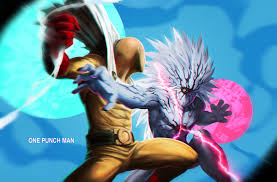

Anime “Orange” tendrá película Recopilatoria / Secuela: Orange -Mirai-
Esta semana llegó a su final la transmisión del Anime “Orange” (オレンジ) en Japón. Si bien dicho evento puede poner algo
melancólicos a sus seguidores, la buena noticia es que con el último episodio, se ha anunciado que un largometraje de la
franquicia viene en camino.
El filme contará de nueva cuenta los hechos más importantes vistos en la serie, pero desde la perspectiva del persona Suwa.
Aunque eso no quiere decir que no tenga material original, ya que Ichigo Takano (autor del manga que se basa el Anime) ha escrito
material para el filme que narrará eventos que toman lugar tras el final de la serie y el manga.
La película se estrenará el próximo 18 de Noviembre 2016 en cines japoneses.

Anime de “One-Punch Man” tendrá 2da Temporada
Durante el evento “One Punch Man Fall Festival” realizado este fin de semana en Japón. Se ha anunciado que la popular
adaptación del manga “One-Punch Man” (ワンパンマン) tendrá una 2da temporada.
El anunció fue realizado directamente por el equipo de producción, en compañía del elenco de voces, así como también ser
confirmado por la cuenta oficial de twitter de la serie.
Lamentablemente aún no se han revelado detalles al respecto a una fecha de estreno, o cast y staff nuevo que pueda
agregarse o cambiar en la nueva la producción.
La serie debutó en el 2009 como un webcomic del artista conocido simplemente como “ONE” (también autor de Mob Psycho 100),
aunque su versión más conocida (y de la cual se base el anime) es la del manga publicado por shueisha y que es re-dibujado por
Yusuke Murata (ilustrador de Eyeshield 21) que comenzó a publicarse en el 2012.
La primera temporada del anime se estrenó en otoño del 2015, y fue una adaptación a cargo del estudio de animación Madhouse.

Crunchyroll anuncia Full Metal Alchemist: Brotherhood para España y Latinoamérica
Meses atrás Crunchyroll anunció que adquiría la licencia de Full Metal Alchemist: Brotherhood, pero hasta ahora no se sabía
si la exitosa serie animada estaría disponible para el mercado español. Finalmente se ha hecho la luz y Crunchyroll se complace
anunciar que ofrece dicho anime a sus usuarios de España y Latinoamérica.
A la pregunta de cuándo Full Metal Alchemist: Brotherhood estará disponible en dicha plataforma, la respuesta es el próximo
sábado 8 de octubre. No habrá que esperar mucho para poder disfrutar de los 64 episodios de la serie animada, ya que desde el primer
día estarán todos ellos disponibles con subtítulos en castellano para los usuarios Premium. Los usuarios gratuitos deberán esperar un
poco más para poder disfrutar de los episodios.
El manga original de Fullmetal Alchemist fue publicado en la revista Monthly Shōnen Gangan de Square Enix entre 2001 y 2010,
ayudado de su versión animada, se convirtió en uno de los títulos shônen referentes. La obra se encuentra editada al completo en
España por Norma Editorial tanto en edición tankoubon como kanzenban.
Fullmetal Alchemist cuenta ya con varias adaptaciones al anime para televisión y dos películas: Gekijōban Hagane no
Renkinjutsushi – Shanbara wo Yuku Mono (2005) y Fullmetal Alchemist: La estrella sagrada de Milos (2011). Esta última fue editada
en España por Selecta Visión.
Cuando tan solo eran unos niños, los hermanos Edward y Alphonse Elric usaron la alquimia para cometer un pecado capital:
intentar la transmutación humana. El terrible precio que tuvieron que pagar por su osadía les ha lisiado de por vida, pero no se
resignan a su destino y están dispuestos a recuperar sus cuerpos. Y para ello necesitan la sustancia más especial del mundo: el
quinto elemento, la piedra filosofal.